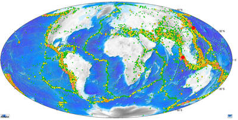
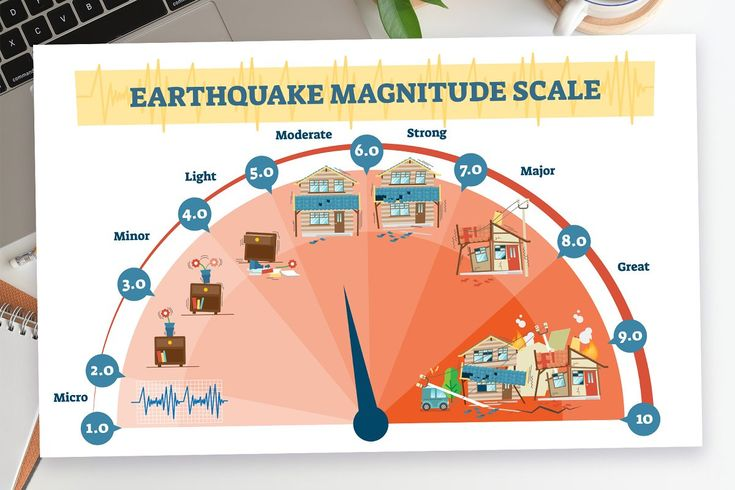

Parmi les catastrophes naturelles, les séismes font partie des phénomènes les plus présents et meurtriers. On en recense ainsi entre 500 000 et 1 million par an dans le monde, soit au minimum 2 700 par jour.
Qu'est-ce qu'un séisme ?
Un séisme est un tremblement du sol provenant du relâchement de très fortes contraintes accumulées en profondeur. Cela a pour effet de provoquer le long d’une faille le mouvement brutal et discontinu de deux plaques.
Un séisme est un tremblement du sol provenant du relâchement de très fortes contraintes accumulées en profondeur. Cela a pour effet de provoquer le long d’une faille le mouvement brutal et discontinu de deux plaques.
Environ 90 % des séismes se produisent au niveau des limites des plaques tectoniques, lesquelles constituent la croûte terrestre. On remarque alors une forte disparité dans la localisation de ces phénomènes.

Bien que des séismes aient lieu quotidiennement, la plupart d’entre eux passent pratiquement inaperçus. En effet, le danger réside non pas dans leur nombre mais dans leur intensité : on parle alors de magnitude suivant l’échelle de Richter.
Magnitude
On utilise une unité logarithmique appelée échelle de Richter pour qualifier l'énergie d'un séisme.
Elle permet d’évaluer l'énergie dégagée à l’épicentre des séismes par la valeur de la magnitude.
Comme nous avons pu le voir, en fonction de leur force, les séismes peuvent entraîner d’importantes conséquences tant sur le plan humain que financier. On peut notamment citer le séisme de Kobé en 1995 qui avait coûté 100 milliards de dollars au Japon.

Aujourd'hui, peu de techniques existent pour atténuer les dégâts causés par les séismes. Des chercheurs français expérimentent l'utilisation de métamatériaux, une technique prometteuse présentée ci dessous.
Dévier les séismes avec des métamatériaux
Dévier les séismes - l'expérience grandeur nature
Résultats de l'expérience
Conclusion
Comme nous avons pu le voir, une onde sismique dans un modèle simple (2D) peut effectivement être déviée grâce à des métamatériaux adaptés. Cette technique pourrait alors à l’avenir protéger des villes ou des sites particulièrement sensibles tels que les centrales nucléaires.
Néanmoins, les séismes mettent généralement en jeu des modèles plus complexes, dans des espaces en 3 dimensions, avec de nombreuses autres variables.
Ainsi, avant de pouvoir réaliser des structures permettant d’atténuer les tremblements de terre, plus d’analyses sur les ondes sismiques et les métamatériaux à grande échelle seront nécessaires.
Pour aller plus loin